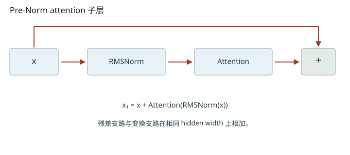
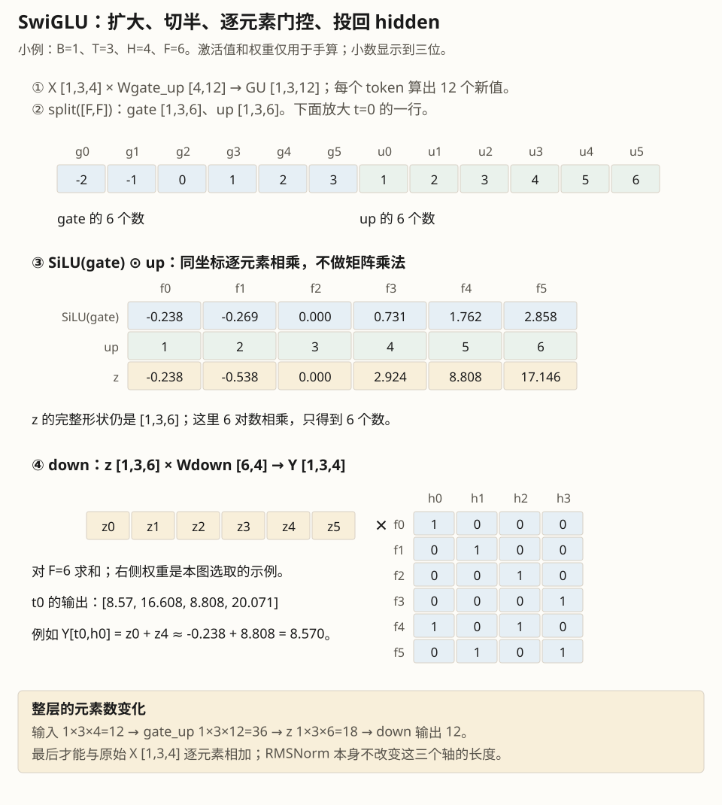
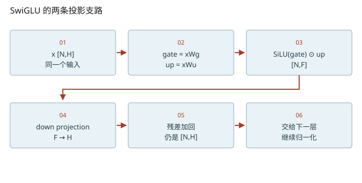

深入篇 20 / Transformer 逐步拆解 · 2026-11-08
一个 decoder block：残差、RMSNorm 与 SwiGLU
把简洁的数学残差公式还原到 nano-vllm 的双变量 hidden_states / residual 实现。
把简洁的数学残差公式还原到 nano-vllm 的双变量 hidden_states / residual 实现。

先用最容易核对的数学版本
x₂ = x₁ + MLP(RMSNorm₂(x₁))
RMSNorm(x) = γ ⊙ x / √(mean(x²)+ε)
MLP(x) = [SiLU(xWg) ⊙ (xWu)] Wd
RMSNorm 对最后一个 hidden 维归一化，不减均值；它不是 LayerNorm 的同义词。γ 是可学习的逐通道缩放。ε 避免接近零时的数值问题；本地实现转 float32 算平方均值，再转回原 dtype。SwiGLU 的 SiLU(z)=z·sigmoid(z)，一条投影经非线性控制另一条投影的内容。依据分别是 RMSNorm 论文、GLU Variants 论文和本地 layernorm/activation 源码。
为什么源码没有出现两句直白的 x +=
第一个 decoder 收到 residual=None，先把原始 embedding 留作 residual，再计算 norm。attention 结果和 residual 在 post_attention_layernorm 内相加，得到 x₁ 并保留；归一化后的值送入 MLP。函数返回的 hidden_states 是 MLP 增量，而 residual 是 x₁。下一层的 input_layernorm 再融合相加，完成上一层 x₂。最后一层也需要 final norm 消费剩余残差。
所以不要把层函数返回的 hidden_states 单独当成已经相加完的 x₂。这个分离是为了融合 residual add 和 RMSNorm，减少中间读写；读代码时每走一步都写清“当前 residual 代表哪个数学变量”。
FFN 的参数与形状
本地 gate_up_proj 将两次 H→F 合并为一次 H→2F，再 chunk；down_proj 做 F→H。忽略 bias，三组权重合计3HF个参数。H=1024、F=3072时为9,437,184个参数/层。FFN 的激活大小依赖本轮 token 数；权重大小不随 prompt 长度改变。注意力负责跨位置混合，FFN 负责当前位置的通道变换；经过多层后两者共同构成上下文相关表示。
把维度变化拆到每一步
- gate_up把H投到2F；split后每份都是F。
- SiLU(gate)⊙up是逐元素乘法；down投影再把F求和投回H。


数值练习：先算，再核对
令 x=[3,4]，γ=[1,1]，为手算暂取 ε=0。先算 mean(x²)、RMS 和归一化结果；再计算一个 H=8、F=16、无 bias 的 SwiGLU 总权重数。
RMSNorm 手算
mean=12.5，RMS≈3.5355，输出≈[0.8485,1.1314]。均值不是0，这不构成错误。
闭卷检索
不要回看正文。答错后先解释原因，再重新打开这一课。
把结论落到源码
- 在 add_rms_forward 中标出 residual 被更新与归一化前的时刻。
- 画出连续两个 Qwen3DecoderLayer 的双变量流，最后接 Qwen3Model.norm。
以下行号由本地 vendor 文件生成；上游链接固定完整 commit，离线摘录可直接打开。
- nano-rmsnorm：nanovllm/layers/layernorm.py L5–50 · 上游证据
- nano-decoder：nanovllm/models/qwen3.py L120–169 · 上游证据
- nano-mlp：nanovllm/models/qwen3.py L91–122 · 上游证据
- nano-silu：nanovllm/layers/activation.py L6–11 · 上游证据
优先阅读：RMSNorm 与 GLU Variants Improve Transformer，重点对照本地实现。
速查：形状与公式 · 三框架映射 · 术语表 · 复习与实战路线 · 4070 Ti本地实验
只在当前浏览器保存自评；不会自动写成已掌握的 learning record。